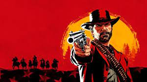

The thrilling suspense and drama within the gripping story of this game will change you as a person when you close the game.

God of War has fun and thrilling controls alongside difficult puzzles which propel the well thought out story

Red Dead Redemtion 2 has an expansive open world to explore. Yet with this open world is an enticing story aswell